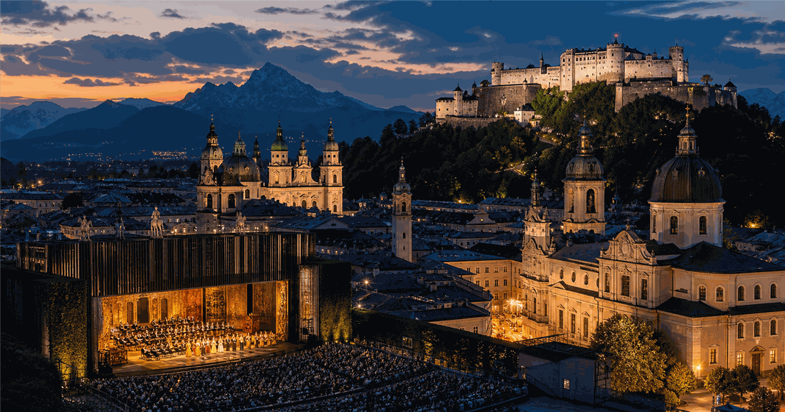
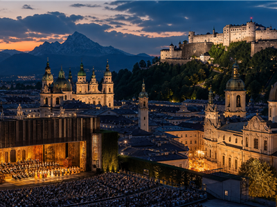

Music festival
Salzburger Festspiele
Salzburg's major summer festival for opera, drama and concerts.

Music festivalsMore festival guidesBrowse destination festivals and cultural calendars.
HistoryA Salzburg institution
The festival is one of Europe's best-known classical music and performing arts events.
How to read itProgramme first
For this event, the useful split is not teams or groups but programme type: opera, concerts and drama.